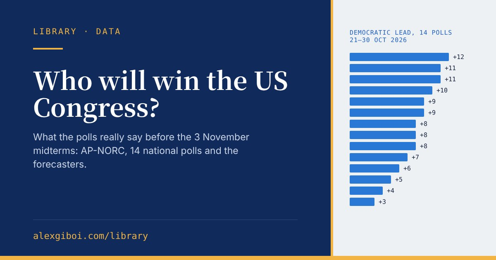

What is at stake
Republicans control both chambers of Congress. To take the Senate, Democrats need a net gain of four seats, because Republicans hold 53 of the 100 and the Vice President breaks a 50–50 tie. In the House the Republican majority is only a few seats, though new district maps in several states have changed the arithmetic. Whoever wins decides how much of his agenda President Trump can pass in his last two years.
The national mood: the AP-NORC poll
The most rigorous survey of the campaign comes from AP-NORC, the polling partnership between the Associated Press and NORC at the University of Chicago. Its respondents are drawn at random from a panel built to represent the whole population, not from volunteers. The October poll (8–12 October, 925 registered voters, margin of error ±4.2 points) found:
About half of voters want “substantial change” in how the country is run, and roughly 3 in 10 want “complete and total upheaval”. This is not enthusiasm for the Democrats: about half of voters view them unfavourably. But about 6 in 10 view the Republicans unfavourably.
Which party for Congress?
Pollsters also ask a simple question: which party will you vote for in your district? Every one of the 14 national polls of likely voters completed between 21 and 30 October puts the Democrats ahead, by 3 to 12 points. The PollCheck average of all recent polls stood at Democrats +8.3 on 31 October.


What the forecasters say
Forecast models turn polls, past results and the make-up of each district into probabilities. Prediction markets show what people betting real money expect. They agree on the House and are less sure about the Senate.
The Senate is closer because Democrats must win several Republican-held seats while defending their own. The Cook Political Report rates seven Senate races as toss-ups, six of them held by Republicans: Alaska, Iowa, Kansas, Maine, Ohio and Texas, plus Michigan, an open Democratic seat. Texas shows how close they are: a University of Houston poll of 2,000 likely voters (10–14 October) had the Democrat, James Talarico, on 48% and the Republican, Ken Paxton, on 46%, a statistical dead heat.
How far to trust it
So an eight-point national lead would survive an error of the size seen in 2020. A two-point lead in a single Senate race would not.
On election night
- Who calls the results. The Associated Press declares winners race by race; the big US TV networks make their own calls too. Its AP Voter Poll, run by SSRS with about 75,000 voters, explains who voted and why; the first findings come out at 23:00 Swiss time.
- When. The first polls close at midnight Swiss time (6 pm in the eastern US). Most of the country follows between 01:00 and 05:00 CET; Alaska and Hawaii come later.
- Patience. States that count mail ballots slowly, California above all, can take days. Close races may not be called on the night. In Georgia a candidate needs more than 50%, or the race goes to a December runoff.
I will add the results to this page once they are in.
Sources
- AP-NORC poll, 8–12 October 2026. PBS NewsHour (AP); AJC (AP, margin of error); ITV (AP); MyNorthwest (AP); News4Jax (AP, enthusiasm).
- Generic ballot. PollCheck average and poll list, 31 October 2026.
- Forecasts. Silver Bulletin forecast; Newsweek on the Silver Bulletin figures, 8 October; Kalshi, 16 October; News 9 on Decision Desk HQ, 26 October.
- Senate arithmetic, Cook ratings and Texas. KUTV; Newsweek; Newsweek on the Cook ratings; Decision Desk HQ on House arithmetic; FOX 4 (University of Houston poll); Texas Public Radio (University of Houston poll).
- Election night. WFTV (AP): what to know about the AP Voter Poll; Georgia runoff date.
- Polling error. FiveThirtyEight.
Researched and written with the help of Claude (Anthropic), based on the public sources listed above, and checked by me. Figures as of 1 November 2026. Corrections welcome.